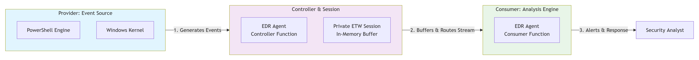
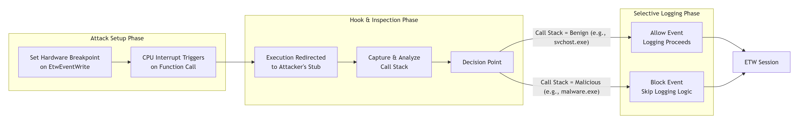

Event Tracing for Windows
ETW is the fundamental, high-performance logging and diagnostics framework built directly into the Windows operating system. Think of it as the central system for monitoring activity on a Windows machine. Its primary job is to collect detailed, structured records (called "events" or "traces") about everything happening in the system starting from kernel operations, disk I/O to application behavior and security incidents. ETW is a kernel-level mechanism designed for extreme efficiency and minimal performance overhead. This allows it to run constantly in production environments without significantly slowing down the system, making it indispensable for real-time monitoring, performance analysis, and security forensics.
ETW matters to security because it’s one of the few Windows mechanisms that can deliver high-fidelity, near-real-time, structured telemetry at scale including kernel visibility without the overhead and latency you’d get if you tried to log everything through traditional event logs.
Why it matters to security
Real-time detection, not after the fact:
Security tools can subscribe live to ETW sessions and see behavior as it happens (process starts, image loads, WMI activity, PowerShell providers, etc.). That enables:
- Faster detection = lower dwell time.
- Richer behavioral correlation, sequence of events.
- Faster response automation.
Kernel + user-mode coverage:
- Kernel providers: Deep OS activity signals.
- User-mode providers: Services, apps, components.
That coverage gives defenders a way to see activity that may never be written to classic logs unless explicitly configured.
Richer context than many classic logs:
ETW events are structured fields, not just text, which makes them easier to:
- Normalize into a security data model.
- Correlate (PID/PPID/TID, session, user/SID, image path, hashes if enriched, etc...).
- Filter precisely (keywords/levels) to reduce noise.
Better correlation:
ETW supports precise timestamps and consistent IDs:
- process → child process → module load → registry write → network connect
It’s also a battleground, attacker vs defender:
Because ETW is valuable, attackers sometimes try to evade or reduce visibility around it. For defenders, that means ETW isn’t just telemetry, it’s part of the assurance/integrity story: “are we still seeing what we think we’re seeing?”
Deep Dive into the ETW Architecture - Four Pillars
The layout below is a “blueprint board”: 4 pillar cards in a responsive grid, each with a strong title bar, subtle icon marker, and consistent spacing for readability.
Providers: Event Sources
An ETW provider is simply an event source: a Windows component, driver, service, or application that knows how to “write” ETW events when something happens. Each provider is identified by:
- Provider Name: Human-friendly identifier.
- Provider GUID: The unique identity used internally by Windows.
Each provider defines the structure and scope of its telemetry:
- Event IDs: What event occurred.
- Levels: Verbosity / severity.
- Keywords: Bitmask categories for filtering.
The command logman query providers
enumerates registered ETW providers and exposes their metadata.
- Name:
Microsoft-Windows-PowerShell - GUID:
{A0C18…}
When running:
logman query providers Microsoft-Windows-PowerShell we see:
-
Provider + GUID:
- Provider: The ETW event source.
- GUID: The internal identifier ETW uses.
-
Value / Keyword / Description:
- Value: 64-bit bitmask (hex).
- Keyword: Readable name for that bit.
- Description: Microsoft’s explanation of that category.
Session: Event Collection Pipeline
An ETW session is defined as “a unique instance of an event tracing session that handles the collection and routing of events from one or more providers.”
In practice, a session (also called a trace session or logger) is a live collection pipeline that sits between providers and consumers.
A running ETW session is responsible for:
- Selecting which ETW providers are enabled.
- Applying filters using Levels and Keyword bitmasks.
-
Allocating in-memory buffers to receive events and routing them:
- to real-time consumers, or
- to an
.etltrace file.
Key takeaway: Providers generate events, but the session decides what gets collected, how it’s filtered, and where it goes.
Controller: Session Orchestrator
In the ETW architecture, the Controller is the management component responsible for creating, configuring, starting, stopping, and updating ETW sessions. It is the entity that brings providers and sessions to life.
Core responsibilities:
- Create: Define a new session (name, buffer size, output mode, log file path).
- Start/Enable: Activate the session, triggering provider callback functions and enabling event generation based on configured Levels and Keywords.
- Stop/Disable: Halt the session, flush buffers, and close output streams.
- Update: Modify a running session by adding providers or adjusting filters.
Who acts as a Controller in practice?
- Security & EDR software: Creates high-priority sessions, enables security-critical providers, and often consumes events in real time.
- Windows services: Run built-in diagnostic and telemetry sessions.
- Custom code: Any application implementing ETW controller APIs.
- Forensic tools: Incident response utilities that deploy targeted tracing on demand.
Example sequence (security tool perspective)
- Decision: An EDR agent decides to monitor PowerShell activity.
-
Configuration:
A session named
EDR_PS_Monitoris created and theMicrosoft-Windows-PowerShellprovider is enabled with theScriptBlockkeyword. - Start: The session starts, triggering the provider’s callback and activating deep instrumentation.
- Result: All PowerShell script blocks are streamed into the session and analyzed in real time.
Example: Acting as a Controller via PowerShell
New-EtwTraceSession -Name "Hunt_Process" -ProviderName "Microsoft-Windows-Kernel-Process" -OutputFilePath "C:\hunt.etl"
This command creates and starts a new ETW session, enables a kernel provider,
and begins streaming process creation events into an .etl file.
Consumer: Reads, parses, and uses events
ETW Consumer is not just a passive receiver; it's the active processor and analyzer that transforms the raw stream of binary events into actionable intelligence. For security, this is where detection and response happen.
Who Are the Consumers?
-
Consumer Application:
- Microsoft Defender for Endpoint / CrowdStrike Falcon / Other EDRs: The EDR agent is a Controller, Session Manager, and Consumer all in one. It consumes kernel ETW events in real-time, enriches them with threat intelligence, runs detection algorithms, and can kill malicious processes on the spot.
- Splunk Universal Forwarder / Windows Event Collector (WEC): These "log forwarders" are specialized Consumers. They subscribe to ETW sessions (or the Windows Event Log, which is built on ETW), format the events, and send them over the network to a central SIEM like Splunk or Elasticsearch.
- Sysinternals Process Monitor (ProcMon): A classic example. When you run ProcMon, it starts an ETW session (as a Controller) enabling file, registry, and process providers, and then acts as its own Consumer to display the events in its iconic UI in real-time.
- Windows Event Viewer (eventvwr.msc): When you open an .evtx file, Event Viewer is consuming a converted ETW log. The live "Windows Logs" view is also consuming events from the persistent ETW session that backs the Event Log service.
ETW Diagram

Why It Matters to Attackers
For an attacker, ETW matters because it's the primary source of telemetry for modern security defenses. Failing to bypass it is like tripping a silent alarm that leaves a detailed, structured audit trail of every malicious action, significantly increasing the chances of detection and forensic analysis
Why Attackers Must Bypass ETW
-
ETW creates four major problems for attackers:
- Detailed Forensic Timeline: ETW logs, especially those from the kernel, and keep a detailed timed record of things like when a process starts, how a computer connects to the network, and what files are accessed. This helps security experts put together a full story of what happened during an attack and understand the full scope of the incident.
- Process Attribution: New features in ETW, like including the Process ID and Process Start Key in event details, have filled a big security gap. It's now more difficult for someone trying to attack a system to hide where an action really came from. For instance, when a scheduled task is made "Event ID 4698", the event now clearly shows the actual program that started it, not just the tool used, like schtasks.exe. This helps security teams easily identify harmful sequences such as powershell.exe starting schtasks.exe.
- Core of EDR Detection: Advanced Endpoint Detection and Response (EDR) systems depend a lot on ETW, especially the Threat Intelligence (TI) provider, to analyze how systems behave. The TI provider records detailed, security-related activities happening deep within the operating system, such as when memory is allocated for running code, when threads are controlled, and when Asynchronous Procedure Calls (APCs) are managed. This helps EDR tools spot sophisticated attack methods like process injection without using traditional hooking techniques.
- Tamper Detection: Even when someone tries to hide their actions, like deleting event logs, it still creates ETW events, like Event ID 1102. Now, these events also include information about the process that started them, which turns the attempt to clean up into a chance to spot what happened.
How Attackers Bypass ETW
-
Common Techniques:
- Patching ETW Functions via Byte Patching:
One way to do this is by changing the key function
EtwEventWritein memory,EtwEventWritealong withEtwEventWriteExandEtwEventWriteFullare used to write events to an ETW session. By patchingEtwEventWritemakes the function exit right away without recording any information, which can suppress ETW events emitted from that process viauser-modeETW write paths, which may degrade visibility for tools relying on that telemetry.
- Patching ETW Functions via Hardware Breakpoints (HBPs): is a sophisticated, it This is a method that works in memory and uses the CPU's debugging features instead of changing the bytes used by ETWEventWrite. A hardware breakpoint can be set in a thread's debug registers (DR0 to DR3, controlled by DR7). When a thread with this breakpoint reaches the specific instruction, Windows sends an EXCEPTION_SINGLE_STEP exception. If the attacker has set up a Vectored Exception Handler (VEH), their code can run at that moment. It can check the thread's state and possibly change it to skip the normal ETW writing process, making it look like the action was successful. This approach avoids typical signs of code modification, but might leave other clues like strange debug register settings, new VEH handlers, or odd single-step exception behavior.
- The Hook: Setting the Hardware Breakpoint: An attacker's code places a hardware breakpoint on the very first instruction of the
EtwEventWritefunction. This is achieved by writing to the CPU's debug registers, which are called DR0 through DR3. Whenever a thread that has the breakpoint set in its debug registers reaches that instruction, the CPU sends a single-step interrupt calledEXCEPTION_SINGLE_STEP, which stops the normal execution of the program. - The Handler: Seizing Control: The attacker needed to set up a Vectored Exception Handler before attacking. This is a special part of their malware that the operating system runs when a breakpoint is hit. It lets them take control right when the system is about to log something.
- The Inspection: Analyzing the Caller: Inside the exception handler, the attacker looks at the call stack. They go back through the return addresses to find out the important question: "Which part of this program is trying to record an event?" They check if the module that called the code is from a recognized security tool, like an EDR DLL, or if it's their own harmful code.
- The Filter: Selective Logging: This is the core of the bypass. The attacker implements logic in their handler:
- If: the caller is considered "Original" like a regular part of the system, so the handler takes away the breakpoint, lets the original
EtwEventWriterun completely so the event gets logged, and then puts the breakpoint back in place. - If: the caller is considered "Malicious," either because they are using their own code or trying to hide a security tool. The handler changes the thread's context. It usually sets the instruction pointer (RIP/EIP) to point to a RET instruction or directly to the end of
EtwEventWrite, so none of the logging code is executed. The function then returns a "success" result without actually logging anything.
- If: the caller is considered "Original" like a regular part of the system, so the handler takes away the breakpoint, lets the original
- The Resumption: Continuing Execution: After changing the context, the handler sends
EXCEPTION_CONTINUE_EXECUTION. The CPU then continues running from that altered point, which means it ignores the unwanted ETW event.

Technical Breakdown of the HBP Attack: - Patching ETW Functions via Byte Patching:
One way to do this is by changing the key function